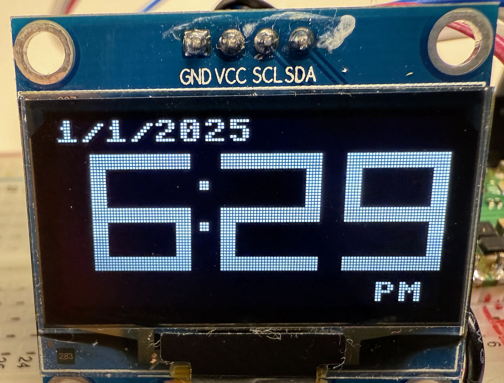

The I2C Bus Standard

Most microcontrollers use the I2C bus as a standard way to communicate with peripheral devices such as sensors, real-time clocks and displays. In this section we cover how to connect your I2C devices to the main microcontroller and test that the connections are working.
Note that I2C is a two-way bus. Although in many of our display examples, there is only data moving from the microcontroller to the device. When we study real-time clocks we will see data going back and forth from the microcontroller to peripheral device.
Connections
The I2C bus has four connections:
- GND - Ground
- VCC - Power - (usually 3.3 or 5 volts)
- SDA - Data
- SCL - Clock
Ground (GND)
The common reference point for electrical signals that completes the circuit and ensures stable voltage measurements.
Connecting the display's GND pin to the microcontroller's GND pin provides a shared zero-voltage reference.
Power (VCC)
The voltage supply line that provides electrical power to operate the display, typically accepting either 3.3V or 5V depending on the model.
Connecting a 3.3V supply from the microcontroller to power a small OLED display.
Serial Data (SDA)
A bidirectional line that carries data bits between devices using a specific protocol for addressing and acknowledgment.
In the example code above, we use GPIO pin 0 to transmit display content and receive status information.
Serial Clock (SCL)
A timing signal line generated by the master device that synchronizes data transfer and defines when the data line should be read or written. In our work, the master device is the microcontroller which sends the clock signal to the display.
In the sample code, we use GPIO pin 1 to coordinate data transfers at rates typically between 100kHz and 400kHz.
Some important points about these connections:
- Both SDA and SCL require pull-up resistors (typically 4.7kΩ)
- All devices share the same GND connection
- Multiple I2C devices can share the same SDA and SCL lines
- Power must match the display's voltage requirements (check datasheet)
Sample I2C Display Initialization Code
1 2 3 4 5 6 7 8 9 10 11 | |
Let's break down this I2C initialization code:
This code sets up a communication interface to control an OLED display using I2C (Inter-Integrated Circuit) protocol instead of SPI. Here's what each part does:
- The imports:
1 2 | |
- The I2C bus initialization:
1 2 3 | |
- The display initialization:
1 2 3 | |
Key differences from the SPI version: - Uses only 2 pins instead of 5 (no CS, DC, or RES needed) - Simpler initialization code - Slightly slower than SPI but adequate for most uses - Can share bus with other I2C devices using different addresses
Worth noting that I2C is often preferred for simple display projects because it requires fewer pins and simpler wiring, even though it's not as fast as SPI.
A common issue to watch for is making sure your I2C connections have appropriate pull-up resistors, though many development boards include these built-in.
Testing Your Connections
The I2C Scanner
1 2 3 4 5 6 7 8 9 10 | |
This code is useful for testing connections on your clock projects.
Imagine you've just connected a new display or real-time clock chip to your Raspberry Pi Pico W, and you want to make sure it's properly connected before you start writing more complex code. This is where this I2C scanner comes in handy - it's like a metal detector that beeps when it finds something, but for electronic components!
Let's break it down step by step:
Imports
First, we import the tools we need:
1 2 | |
I2C is for communicating with components using just two wires
- Pin lets us control the physical pins on the Pico W
- time gives us timing functions (though we don't use it in this example)
Connection Setup
Next, we set up I2C communication:
1 | |
I2C(0) means we're using the first I2C channel
- sda=Pin(0) connects the data line to pin GP0
- scl=Pin(1) connects the clock line to pin GP1
Run the Scan Function
Finally, we scan for devices and print what we find:
1 2 3 | |
i2c.scan()looks for any I2C devices connected to those pins- For each device found, it prints both the decimal number and hexadecimal address
- For example, if you see
104 0x68, that's the same number in two formats 0x68(hex 68) is the address for a DS3231 real-time clock0x3C(hex 3C) is common for OLED displays
This code is super helpful because: 1. It confirms your wiring is correct - if you see a device, your connections work! 2. It tells you the address of your device, which you need for the rest of your code 3. It helps troubleshoot - if you don't see your device, you know to check your wiring
Think of it like checking if your game controller is properly connected to your computer - this code does the same thing for I2C devices connected to your Pico W.
Common I2C Addresses for Clock and Watches
I'll create a comprehensive list of common I2C addresses you might encounter when building clocks and watches with the Raspberry Pi Pico W.
Real-Time Clock (RTC) Modules
0x68: DS3231 Temperature-compensated RTC0x68: DS1307 Basic RTC0x6F: PCF8563 RTC
OLED & LCD Displays
0x3C: SSD1306 OLED display (most common setting)0x3D: SSD1306 OLED display (alternate address)0x27: LCD displays with PCF8574 I2C adapter0x3F: LCD displays with PCF8574A I2C adapter
Environmental Sensors (for clock/weather stations)
0x76: BME280 Temperature/Humidity/Pressure (primary address)0x77: BME280 Temperature/Humidity/Pressure (alternate address)0x40: HDC1080 Temperature/Humidity0x44: SHT31 Temperature/Humidity (primary address)0x45: SHT31 Temperature/Humidity (alternate address)
User Input Expanders
0x20-0x27: MCP23017 16-bit I/O expander (configurable)0x38-0x3F: PCF8574 8-bit I/O expander (configurable)
Pro Tips:
- If you see address conflicts (two devices wanting to use
0x68for example), many devices have an address select pin or jumper to change their address. - Some devices like the SSD1306 OLED have a built-in address selection based on whether you connect their SA0 pin to ground or VCC.
- Always run an I2C scanner before starting a new project to confirm your device addresses match what you expect.
Remember: These addresses are shown in hexadecimal format (hence the 0x prefix). When you see these in scan results, they'll often show both decimal and hex formats (like 104 0x68 for a DS3231).